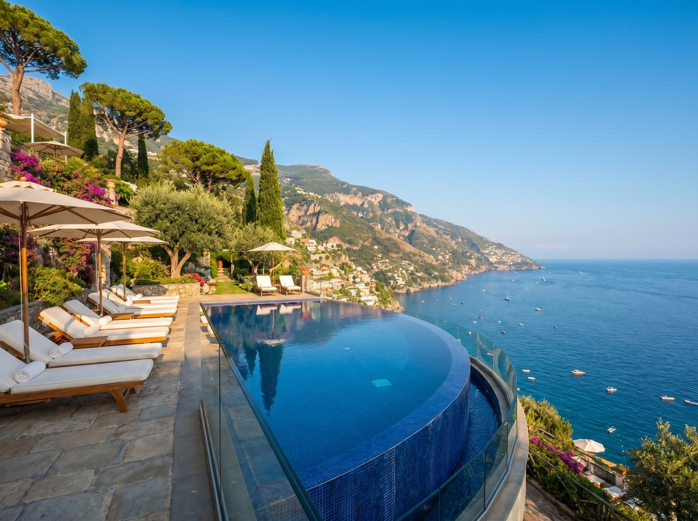
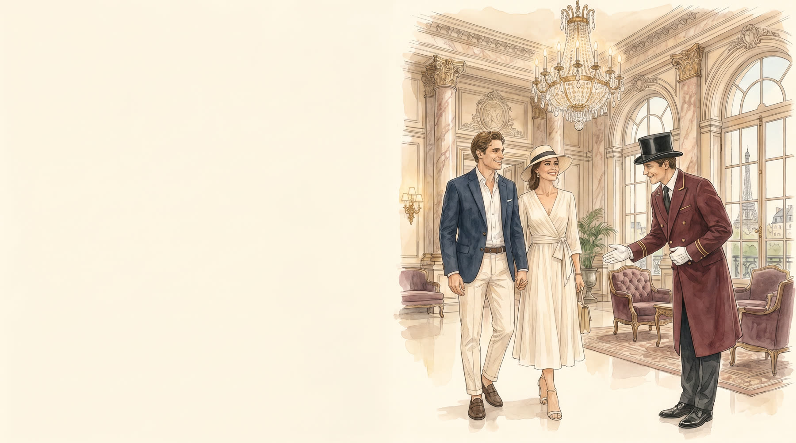

Le Marais
Hôtels particuliers, galeries d'art et boutiques de créateurs. Le Paris historique qui ne dort jamais vraiment, entre la place des Vosges et les ruelles médiévales.
Le guide du Concierge
Où séjourner à Paris ? Les palaces de la rive droite — Le Meurice et le Ritz au 1er, le Plaza Athénée et le Bristol au 8e — restent les adresses de référence du voyage de luxe. Mais Paris ne se visite pas, elle se vit. De la rive droite des palaces aux ateliers de Saint-Germain, voici les adresses, les quartiers et les tables que notre Concierge recommande à ceux qui veulent goûter la ville comme un habitué — pas comme un touriste.
Nos palaces et hôtels d'exception préférés à Paris, chacun avec sa personnalité et son quartier.
Quatre Paris pour quatre humeurs — choisissez le vôtre.
Hôtels particuliers, galeries d'art et boutiques de créateurs. Le Paris historique qui ne dort jamais vraiment, entre la place des Vosges et les ruelles médiévales.
Cafés littéraires, antiquaires et l'esprit rive gauche. Le Flore, les Deux Magots, et une élégance intellectuelle qui ne s'imite pas.
Montaigne, George-V, François-1er. Le luxe à l'état pur : haute couture, palaces et joailliers, à deux pas des Champs-Élysées.
La butte, ses ateliers d'artistes et ses vues sur tout Paris. Un village dans la ville, romantique au lever du jour, avant les foules.
Les grands rendez-vous parisiens — et le conseil pour les vivre autrement.
Le Louvre à l'ouverture, l'Orangerie pour les Nymphéas, et le musée Rodin pour son jardin. Réservez les premières heures pour avoir les chefs-d'œuvre presque pour vous.

Oubliez les bateaux-mouches : notre Concierge organise une vedette privée au coucher du soleil, coupe de champagne à la main, entre le Pont-Neuf et la tour Eiffel.
De la grande gastronomie au bistrot d'initié — notre carnet d'adresses.
Le Meurice Alain Ducasse, l'Épicure au Bristol, le Plénitude au Cheval Blanc. Les tables qui font de Paris la capitale mondiale de la gastronomie.
Les bistrots où les Parisiens vont vraiment, loin des guides. Demandez à votre Concierge : il connaît la table du soir, et il réserve.
Les questions que l'on nous pose le plus souvent — et nos réponses de Concierge.
Les meilleures adresses de luxe à Paris sont les palaces de la rive droite : Le Meurice et le Ritz (1er, Tuileries et place Vendôme), le Plaza Athénée et le Bristol (8e), et le Cheval Blanc face à la Seine. Le quartier dépend de votre séjour : le Triangle d'Or pour le shopping, Saint-Germain pour la rive gauche, le Marais pour l'art et l'histoire.
Pour un premier séjour, le 1er arrondissement (Louvre, Tuileries) et le Triangle d'Or (8e) offrent les palaces, les boutiques et la proximité des grands monuments. Saint-Germain-des-Prés séduit les amateurs d'art et de littérature, le Marais ceux qui aiment marcher, Montmartre les romantiques.
Trois à quatre jours permettent de découvrir l'essentiel : les grands musées (Louvre, Orsay, Orangerie), les monuments (tour Eiffel, Notre-Dame, Arc de Triomphe), une croisière sur la Seine et quelques tables d'exception. Pour flâner quartier par quartier et profiter des palaces, comptez une semaine.
Les grandes tables étoilées des palaces parisiens incluent Le Meurice Alain Ducasse, l'Épicure au Bristol (3 étoiles d'Éric Frechon) et le Plénitude au Cheval Blanc (3 étoiles d'Arnaud Donckele). La réservation se fait souvent plusieurs semaines à l'avance ; notre Concierge obtient les tables les plus prisées.
Dites-moi vos envies — un dîner inoubliable, une matinée loin des foules, un cadeau introuvable. Je connais les directeurs des maisons, les chefs et les heures creuses. Votre séjour parisien, je le compose avec vous, dans le moindre détail.
